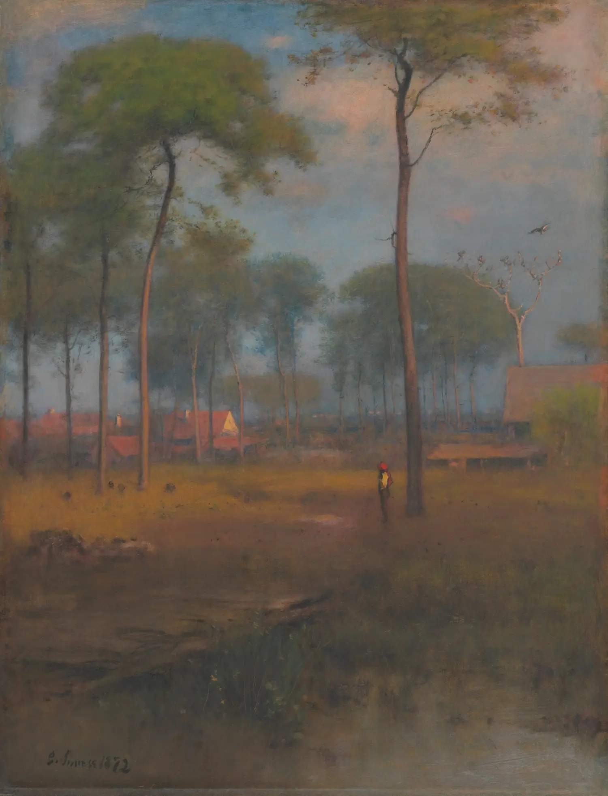
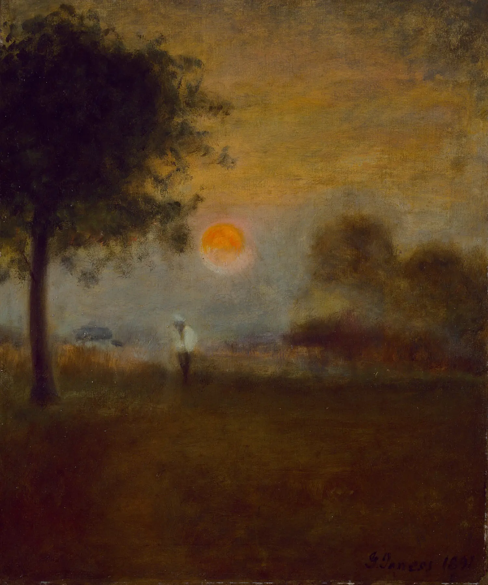
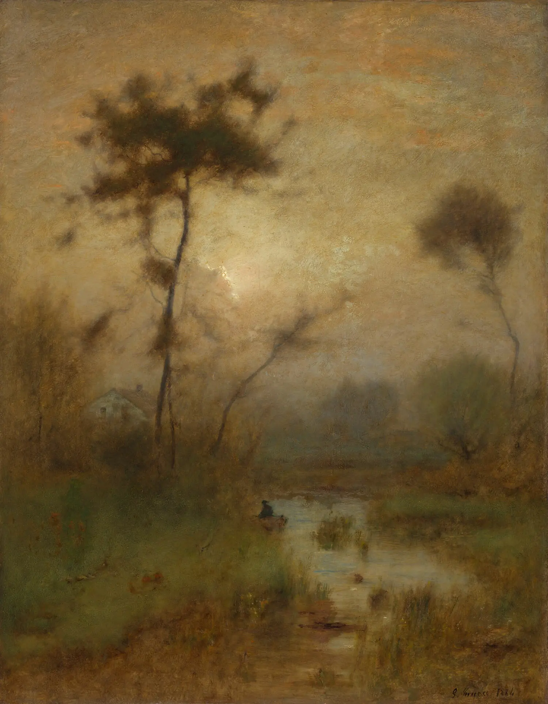
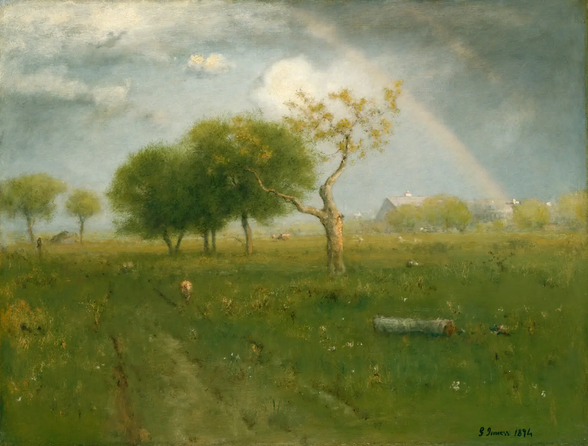

Tek bir ressamın yağlı boya portfolyosu için dört tasarım yönü. Dördü de aynı eser setini, aynı ölçüleri ve aynı metinleri kullanıyor — değişen tek şey tasarım dili. Kıyas bu yüzden adil: neyi sevdiğini seçerken içerik değil, ruh karşılaştırıyorsun.
Üçü de gerçek, gezilebilir sitelerdir; tıkla, kaydır, karanlık/aydınlık temayı dene. Ölçü ve ölçek özellikleri gerçek santimetre verisiyle çalışıyor.

Süslenmeyi reddeden site. Beyaz zemin, Helvetica, devasa resimler, 11 piksellik künye.

Karanlık bir galeri odası. Hareket eden tek şey ışık; resim asla kıpırdamaz.

Henüz ciltlenmemiş bir monografi. Resimler yapıştırma klişe, düşünce kenar boşluğunda.

Ressamın kendi kayıt defteri, yayımlanmış hâli. Manşet yok; ölçüler manşet.